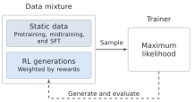
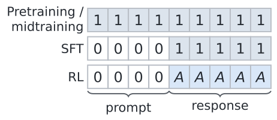
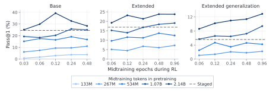
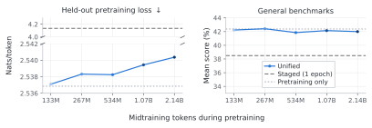
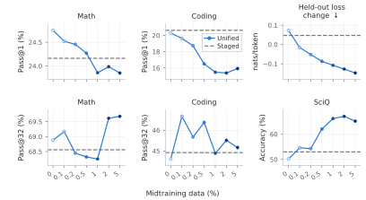
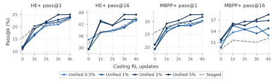

Illustrative data schedules
Best observed performance

Training complete
Foundation models are conventionally trained through a sequence of stages: pretraining, midtraining, supervised fine-tuning (SFT), and reinforcement learning (RL). These stages have become embedded in specialized training recipes and infrastructure, and are often treated as separate learning problems. We argue that this algorithmic separation is not fundamental. Unified training places pretraining, midtraining, SFT, and suitable RL updates under a common maximum-likelihood formulation, allowing static data and model-generated data to be combined throughout training.
With a common training objective, the central design choices become which data to use, in what proportions, and when. Conventional staged training is one choice of this schedule. We study unified training across the full pretraining–midtraining–RL pipeline, evaluating the effect of different data designs on accuracy, coverage, forgetting, and continual learning. We hope the unified training approach will be useful in the following two ways:
- It allows a single and scalable infrastructure for the full training pipeline.
- It enables a holistic framework for advancing the science of foundation model training.
1. A unified likelihood formulation
Pretraining, midtraining, and SFT already share a maximum-likelihood objective. Incorporating RL requires identifying the target distribution associated with its update. We build on Maximum Likelihood Reinforcement Learning (MaxRL), which maximizes the expected log-probability of success under binary rewards. The original MaxRL result shows that its population update is equivalent to maximum-likelihood fitting to the current policy’s success-conditioned distribution. MaxRL therefore admits the same likelihood-fitting form, with a target constructed from the current policy’s success-conditioned distribution.
We extend this construction to arbitrary generation policies. This allows us to combine the resulting targets with static data in a single likelihood objective. Each source supplies a distribution over prompt–completion pairs; sampling from their mixture and applying the likelihood loss optimizes the corresponding a weighted distribution over the mixture of data sources. The source distributions and mixture weights can evolve throughout training. Conventional staged training is the special case that places all mixture weight on one source at a time, while unified training allows the sources to overlap.

The framework also accommodates other suitable RL objectives and continuous rewards through different targets and prompt weights. For example, binary-reward REINFORCE fits the same success-conditioned target as MaxRL but gives greater weight to prompts with higher success probability. And TailRL is the continuous reward analogue of MaxRL under the same framework.
A shared data format, loss, and trainer
In practice, we represent every example as a token sequence with nonnegative weights and train on all sources with the same weighted cross-entropy loss.

For MaxRL, the generator samples multiple completions per prompt and estimates the pass rate p̂. Correct completions receive weight A = 1/p̂, and incorrect completions receive zero; prompts with no successful sample contribute no gradient. The trainer sums weighted token losses and normalizes by the total number of non-prompt tokens in the batch. The relative contributions of static and generated data consequently depend on the realized token mixture, rather than a fixed coefficient between separately normalized source losses (we run an ablation on a variant of this approach in the paper).
A data buffer connects generators and the trainer. Generators append evaluated responses using a recent copy of the model, while the trainer samples static data and RL generations from the buffer, updates the model, and periodically publishes its weights. Generation and training run asynchronously.
2. Unified training across the full training pipeline
We first study the full training pipeline in a controlled setting. We train a 124M-parameter model from scratch with a fixed 20B-token pretraining stream and a fixed 510M-token midtraining corpus of oracle-generated reasoning traces. The tasks are natural-language reasoning puzzles with verifiable answers and controllable difficulty. Midtraining demonstrates the underlying reasoning operations; RL introduces new combinations of these operations. This construction lets us examine how midtraining supports learning beyond the demonstrated patterns.
Staged training uses pretraining, midtraining, and RL sequentially. Unified training mixes the reasoning corpus into the final part of pretraining and continues using it during RL. We vary the amount of midtraining data used in both parts of the pipeline while preserving the pretraining stream. Increasing the midtraining budget eventually reuses the same corpus, so the comparison also studies data reuse.
The evaluations distinguish task performance from generalization:
- Base. Puzzle sizes remain within the range represented in midtraining.
- Extended. RL adds larger puzzles, and evaluation uses held-out problems of those sizes.
- Extended generalization. The same Extended models are evaluated on still larger puzzles, absent from both midtraining and RL.
Base and Extended test learning on the RL tasks; Extended generalization tests performance beyond the training distribution.

- Task performance and generalization. The best unified configurations outperform staged training in both Base and Extended. The advantage also holds on Extended generalization, where the relative improvement is largest.
- Reusing midtraining data before RL. Increasing the amount mixed during pretraining generally improves final accuracy. The strongest configurations reuse the corpus for approximately two and four epochs. In staged training, extending midtraining from the best two-epoch configuration to four epochs reduces final RL accuracy in both settings.
- Mixing midtraining data during RL. With the largest pretraining mixture, Base accuracy peaks at an intermediate RL mixture; Extended and Extended generalization generally improve with larger mixtures over the tested range.
The value of repeated midtraining data depends on how it is incorporated into the training pipeline. The mixtures used during pretraining and RL interact, and sometimes there is a trade-off between task performance and generalization. Note that this comparison matches RL updates and generation budgets within each setting; it does not yet match total training compute.
3.Compute-matched comparison
Different data mixtures require different amounts of compute, even with the same number of RL updates. We therefore compare accuracy and coverage within a common total training budget. Our accounting estimates model FLOPs across pretraining, midtraining, RL generation, and optimization on both RL responses and mixed-in static data. This captures the additional training cost that the final-performance comparison leaves unresolved.
The plot distinguishes individual training runs from the best observed performance at each budget:
- Training trajectories. Each curve follows one configuration through RL. We include a sweep of six staged training variants, spanning three midtraining budgets and two learning rates, because the best final configuration need not be best at an earlier budget.
- Observed frontiers. The black frontier connects the highest-scoring checkpoints observed within each compute budget, allowing both the configuration and RL duration to vary. Accuracy and coverage have separate frontiers and may select different checkpoints.

The compute-optimal configuration changes with the available budget. Staged training contributes to the frontier at intermediate budgets, particularly for accuracy on the primary RL tasks. Unified training reaches higher accuracy and coverage at larger budgets. Its advantage is most consistent on Extended generalization, where unified configurations account for almost all of the observed frontier for both metrics.
The benefit of unified training therefore persists after accounting for the compute. Mixing changes which allocations of data and compute are effective: more reuse of the midtraining corpus can remain useful when it accompanies pretraining and RL, even when additional staged midtraining reduces final performance. These frontiers characterize the configurations tested, but they are not a global optimum or a predictive scaling law. They nevertheless show that restricting the search to sequential stages can exclude better allocations within the same compute budget.
4. Retention of pretraining capabilities
We next examine whether learning from the reasoning corpus preserves capabilities acquired during pretraining. Before RL, we evaluate held-out pretraining loss and mean benchmark score across five general benchmarks. The analysis on forgetting after RL is presented in the subsequent section.

Across all five unified mixtures, both measures remain close to the pretraining-only model, even as the amount of midtraining data increases. Even the staged configuration selected for retention has substantially higher held-out loss and lower mean benchmark performance. The staged configuration selected for final RL accuracy performs worse still on both retention measures.
For this reasoning corpus, mixing during pretraining substantially reduces forgetting while supporting subsequent reasoning gains. The configurations with the strongest final reasoning performance also largely preserve these aggregate measures of pretrained capability. Evaluating midtraining solely by immediate task accuracy would miss both its retention cost and its effect on later RL.
5. Heterogeneous midtraining data
The controlled experiment uses task-specific reasoning traces. We next study a heterogeneous midtraining corpus to examine how unified training affects specialization on mathematics and capabilities beyond the RL task. We use a 0.76B-parameter model trained from scratch through pretraining and midtraining, then run mathematical RL on Math12K. An additional 240M-token corpus contains web text, mathematics, code, and reasoning traces, which is sampled from the same data distribution as the midtraining corpus. Staged training uses this corpus before RL; unified training mixes it into RL.
We vary the constant midtraining proportion from 0% to 5% while holding the number of mathematical RL updates fixed. The zero-mixing ablation uses the same asynchronous trainer as the nonzero mixtures, providing a control for adding midtraining data with the implementation held fixed. We evaluate mathematical accuracy and coverage alongside coding, general knowledge, and held-out corpus loss.

- Mathematics. Accuracy remains similar across the sweep, with a small decrease at larger midtraining proportions. The largest proportions achieve the highest coverage, although the trend is not monotonic.
- Forgetting. Every nonzero mixture reduces held-out corpus loss below the base-model value, larger mixtures reduce it further, and SciQ accuracy generally improves. Staged training instead increases corpus loss.
- Coding. Pass@1 generally decreases as more midtraining data is mixed in, while pass@32 remains above staged training and the zero-mixing control.
A heterogeneous midtraining corpus can therefore mitigate forgetting and improvecoverage but it also has a mixed effect on accuracy. The proportion determines a tradeoff among these outcomes; none of the tested mixtures is uniformly best.
6. Scheduling midtraining data during RL
We also test whether changing when midtraining data is used can reduce the coding accuracy cost while preserving the retention benefits. We compare constant mixing, linear decay, linear growth, and linear decay to zero halfway through RL. All four schedules have the same average configured midtraining proportion of 0.5%.

Ending the mixture halfway through training yields higher final coding and SciQ accuracy than constant mixing. SciQ gains persist after midtraining data is removed, while held-out corpus loss rises and gives up part of the retention benefit. Mathematical accuracy and coverage remain similar across the four schedules.
The distinction between corpus retention and benchmark performance is consequential for schedule selection. Continued mixing better maintains fit to the midtraining distribution, whereas concentrating the data earlier improves the final coding and SciQ results in this comparison. The benefit of a data source can persist after it is removed, and keeping its proportion fixed throughout RL is not necessarily the best way to use it.
7. Continual learning after mathematical RL
The coding accuracy cost raises a question that checkpoint evaluation alone cannot answer: does unified mathematical training produce a worse initialization for coding RL? We continue the staged mathematical model and four unified models trained with constant 0.5%, 1%, 2%, and 5% mixtures. All use the same coding RL configuration without midtraining data. The comparison tests how the preceding training affects subsequent learning, with this continual learning procedure held fixed.

Despite lower initial coding accuracy, all four unified models achieve higher final accuracy on both benchmarks and higher MBPP+ coverage than staged training. The model trained with a 5% mixture performs best on all four final metrics. HumanEval+ coverage at smaller mixtures is similar to or below the staged result, so the coverage advantage depends on the initialization.
In the paper, we also have a separate continuation on general reasoning questions from WebInstruct, which shows the same reversal in accuracy.
We also have another results on the controlled experiment with reasoning puzzle that shows a related effect: the staged model has higher Base accuracy before RL than any unified initialization, yet the best unified models outperform it after RL.
8. Future directions
We have a lot of more fun results in the paper, and I hope you will be interested to check them out as well! We think the primary goal is to develop a scientific understanding of foundation-model training as a whole: how data composition, timing, and compute allocation jointly determine the capabilities of the final model. Unified training provides a common formulation and system in which these decisions can be studied together. Several challenges remain before this view can yield predictive principles.
Predicting across scales and budgets. Our results establish trends for the configurations that we studied, but do not predict how they change with model size or training budget. This requires systematic studies of such as scaling laws.
Data and optimization. The effect of a data schedule can depend on the optimization schedule used with it. Controlled experiments need to distinguish these effects and characterize their interactions, including how optimization choices should respond as the training distribution evolves.
Interactions among tasks. Most of our experiments optimize one RL task at a time. Joint multitask training adds transfer, interference, and unequal rates of progress. Understanding these dynamics is necessary to determine how data and compute should be distributed across tasks, especially when the model itself generates part of the training data.
Retention and continual learning. The value of a training decision may only become apparent after further learning, as our continual-learning results illustrate. Longer task sequences are needed to understand how earlier mixtures affect both forgetting and adaptation, and to identify measures that predict a model’s ability to learn from future data.